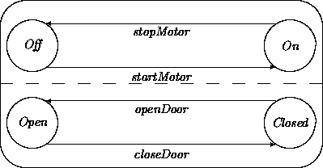

|
Chapter 6: Object Interaction |
Object interaction patterns may be placed in two broad categories, differing with respect to the roles played by the participants:
Producer-consumer interaction involves only unidirectional (``one-way'') communication. Examples include a user selecting a menu item, a buyer sending a purchase order to a supplier, and a report generator sending a report to a printer. An event may have multiple consumers. For example, a stock quotation service may broadcast stock prices to all ``interested'' parties.
Client-server interaction involves bidirectional synchronized communication. A client requests that an operation be performed by a server, and waits for a reply. Both the request and the reply may contain other transmitted data. This pattern is seen in common ``service'' procedure or function invocations.
Bidirectional patterns are quite popular in OOA, in part because they readily map onto the object interaction mechanisms available in most OO programming languages. This fact leads to a terminology mismatch. One might suspect that the ``message passing'' supported by OO programming languages would correspond to one-way asynchronous interaction. This is not the case. Instead, in languages such as Smalltalk, C++, etc., a ``message'' is a synchronized bidirectional procedure (or function) invocation. To avoid such connotations, we often use the term ``event'' rather than ``message'' to encompass either of these interaction styles and their variants.
We will look in more detail at transition descriptions discussed in the previous chapter, this time concentrating on the interactive aspects of the guard, action, and event components of our transition diagrams. Transition notation concentrates on the behavioral properties of a single object. It describes what an object expects from the context without specifying any particular context, and how an object contributes to the context. It does this without any assumption about the context beyond the existence of event providers and event consumers.
For interactive transitions, we split the box holding the guard to separate a regular boolean condition and the dependency on an event. We leave the action box as is. The box for an optional event can be utilized to describe values that are available to the members of the audience:
A guard may contain a condition referring to any or all of:
In the design phase, references to objects other than self within guards will necessitate construction of ``read-only'' attribute access operations and related processing that have no impact at the current level of description (see Chapter 16). In analysis, we freely list all required guard conditions without worrying about the underlying mechanics.
Firing a transition requires that the condition and the event, if specified, are satisfied. If the event does not entail data transfer, it is a pure trigger , an ``invitation'' for the recipient to engage in a state transition. A declarative description of such a trigger can rely on an invariant indicating that certain state combinations of objects are to be maintained. For example, whether an engine is in the off or on state may be reflected by a particular indicator light. Consequently, a state change of the engine must correspond with a state change of the indicator light.
An input event may contain other data ( in) sent as ``arguments''. A guard that depends on an external event may contain a signature description regarding the types of expected data, as well as any other constraints. This data becomes available, of course, within the transition network of the recipient. The properties and types of data produced by the originator of an event should satisfy expectations expressed by a guard of a recipient.
As an example, consider a transition that performs a mutation of the
balance of an account. The guard expects an input event that carries
the amount mut to be added or subtracted. This transition may
insist, for example that a negative amount does not leave the balance
negative. Thus, this knowledge can be added to the event guard box:
balance + mut >= 0.
An action is a terminating activity that can affect local attributes. Action components may be broken into two categories:
For example, an Account withdrawal transition may
result in the adjustment of its balance attribute:
balance' = balance - mut.
The transition may also require interaction with another object to
determine the kind of currency to be delivered to the customer. We
have no special notation for bidirectional interaction with a server
out of the action box. However, class interaction diagrams can
provide more graphical detail about bidirectional interactions.
The creation of an event is optional in a transition. When it is present, it has a name and a description of values ( out) be passed on to the audience of the event. The intended interpretation is that these events are issued after the listed transition actions have been completed. The reply event in client-server interaction falls in this category. For example, an Account withdrawal transition may send the new balance' value as a reply value. Other events may be included as well. For example, the withdrawal transition may generate an event picked up by a transaction logging service.
Details about the audience for the event may or may not be available. If a class has a narrow purpose, it may be obvious which objects make up the audience, what their transitions are and what values are to be sent over. For example, an ignition lock of a car should pass a turn-key event to the start engine. Alternatively, we may know nothing about the audience. For example, the recipient of a mouse event is any object to which the mouse is at that time attached. To play it safe and have maximum flexibility, we minimize commitments about the audience. We will later introduce a notation that captures communication partner information. Since the audience may consist of multiple recipients, we cover not only point-to-point messaging, but also broadcasting. This facilitates ``to whom it is concerned'' interaction descriptions.
The following table provides a pragmatic classification of transitions with respect to input and output events. Most of the entries are self-explanatory. The last row describes a transition that waits for an event, optionally receives data, performs an operation, and generates an event, again optionally passing data along to the audience of the second event.
| guard depends on event | transition creates event | type of transition |
| no | no | internal transition |
| yes | no | input port |
| no | yes | output port |
| yes | yes | transducer |
A special form of transducer transition is common enough to single out for special treatment. We use a special notation for service transitions, those that process ``services'' provided by one object to others. This notation represents the special features of service transitions:
Observe the superficial structural similarity of a service transition and the emulated active states diagram given in Chapter 5. The difference is that the guard in an emulated active state refers to the attributes of the object, while a service transition refers to an outside invoking event.
A transition ``fires up'' when an event specified in its guard occurs and other conditions in the guard are satisfied. This raises the issue of what will happen when an event is generated, but a recipient cannot honor the corresponding transition because either it is in a state in which no corresponding guards are satisfied or it is busy in another transition.
Transitions may define the consequences of an object receiving each kind of event when it is not in a state that ordinarily handles it. For completeness, models should specify the effects of accepting each receivable event in each possible state. Alternative transitions include the following.
Queueing implicitly assumes the existence of a state with an associated queue that contains those ``remembered'' events that cannot be honored right away. The intended semantics is that when such a state is entered, its queue is investigated to verify whether a transition can be ``fired up''. We leave the issue open how the queue is to be ordered and insist only that some commitment be made.
Inaction, queuing, and exceptions do not address cases in which an event is issued to a recipient that is busy within another transition. Interpretations must reflect underlying assumptions about the nature of object communication. Several are available. While they may reflect vastly different assumptions, each may be employed to similar effect. Details do not impact the general form of analysis models.
We assume asynchronous communication by default. A sender may always issue an event, regardless of the status of the recipient(s). Producer-consumer interaction involves one-way send-and-forget events, including those directed to multiple recipients. Client-server interaction still requires synchronized waiting by clients. Asynchronous communication frameworks may be further categorized by their assumptions about the underlying media:
Additional refinements are possible. The media may ``spontaneously'' lose events with some known probability, buffers may have known properties and limitations, etc.
In asynchronous systems, senders need not, and generally cannot distinguish situations in which events have not yet been received from those in which they have been received but then internally queued. Similarly, senders cannot distinguish event loss or recipient failure from other postponements.
In this framework, asynchronous communication may be modeled via synchronous communication in which every sender-recipient pair is connected by one or more objects serving as communication buffers. Conversely, rendezvous interaction may be described in asynchronous frameworks via bidirectional communication idioms in which the recipient notifies the sender on receipt.
Preemption significantly complicates models, so must be used with care. Modeling preemption requires that analysts break conceptually meaningful transitions into their finest granularity components, thus specifying all possible ``listening points'' during which objects may accept preemptive events.
One-way interaction may be construed as ``deeper'' than bidirectional interaction. A bidirectional interaction protocol may be decomposed into two one-way interactions. Other protocols, including the following, may be constructed as well. (We postpone more precise descriptions of the underlying mechanics to Part II, Chapters 20-22.)
1Footnote:
We use the term ``delegation'' in an intentionally looser sense than sometimes seen in the OO literature. We use it to refer to interactions with objects that somehow help the host perform a particular service or responsibility. We discuss other variants in Chapter 22.
Any object engaged in a synchronized interaction may include time-outs that cause it to stop waiting for a reply, acknowledgment, or other event. Time-outs may be specified using the concepts and notations of Chapter 11.
We avoid client-server self-interaction. An object cannot simultaneously wait for and perform a service or transition, since this would entail being in two states at once. In contrast, many programming languages support (possibly indirect) recursive self invocations by ``suspending'' one operation in order to perform another, ultimately ``unwinding'' back. Remember though, that analysis objects are autonomous computational entities. At a declarative level, recursive transitions raise the same questions discussed with respect to active states in Chapter 5. Any usage invites clarification. For example, if one wishes to describe objects supporting some form of suspension, the corresponding transition machinery must be described. Since recursive invocation plays essentially no role in modeling and problem characterization, we will not do so. However, in Chapter 19 we describe design-level recursion of ``local'' computations that implement analysis-level actions.
Transition network notations describe the behavior of a prototypical element of a class independently of the role that the instances of the class will play in a particular target system. In this section, we describe notations that indicate the dynamics among partners in an interaction.
Interaction diagrams are directed graphs with classes as nodes and interaction connections as vertices. The classes belong to a particular application (or a generic framework). A connection from the class A to the class B means that instances of class A may communicate in the indicated fashion with instances of class B.
We have two different kinds of connections. Synchronized bidirectional arcs connect a client class and a server class:

Asynchronous one-way arcs connect an event producer class and event consumer class:
Other line styles and conventions could be introduced to abbreviate variant interaction protocols including those described in the previous section.
An interaction diagram may also include a ``stepping stone'' marker that glues together different views of an interaction. These may be used to resolve event name mismatches between producers and consumers, as well as to accommodate multiple producers and/or consumers. For example:
Stepping-stone ovals may be eliminated by resolving event name mismatches within the associated classes and specifically directing events to particular recipients. However, it is preferable to instead interpret them as design-level requirements, obligating designers to install mechanisms that instantiate the indicated connections. This provides flexibility in how designs may support object interaction without requiring analysts to commit to particular mechanisms.
Interaction diagrams describe the nature of interaction among instances of different classes, but they do not indicate the precise identities of the partners of any given interaction. This knowledge is generally not available when a class is defined. There are two reasons for this. First, an interaction partner may be different for each instance of the class. The class cannot ``hard-wire'' the knowledge. Second, we normally want to define a class in a generic fashion so that it can be used in multiple, open-ended contexts.
Thus, when a class is defined we should not know what the communication partners are for the instances. Instead, we should specify only the ``contract'' for bidirectional interactions, or the ``obligations'' and the ``expectations'' for one-way interactions. Any communication partner satisfying these constraints will do.
This position is argued forcefully by Sullivan and Notkin [13]:
In dynamic modeling ... object-oriented analysis generally fails to externalize representations of behavioral relationships, instead casting them in terms of direct communications among the related classes. This produces exactly the intertwining of definitions that externalizing architectural relationships was intended to avoid. ...We show that implicit invocation is the dual of explicit method invocation and that adding an implicit invocation mechanism makes it possible to externalize behavioral relationships.
A generic solution for introducing partnership information is to establish an acquaintance relationship that relates clients, servers, and services for bidirectional interaction and producers, consumers, and transitions for one-way interaction. For example, an acquaintance relation may describe those objects involved in withdrawals:
Generally, every interaction diagram may be associated with an acquaintance relation describing those partners from each of the classes that communicate in the indicated manner. Conversely, a single acquaintance relation may cover several kinds of interaction among the listed participants.
Acquaintance relations may be annotated and used in the same way as any other relation. For example, cardinalities may be added to indicate that each sender may interact with multiple recipients. Parametric instances of the relation may be employed to describe interaction constraints among attributes of a class.
Listing partnerships via acquaintance relations normally provides sufficient information for designers to arrange that the appropriate interactions occur (see Chapters 16 and 18). Alternatively, when appropriate and desirable, these matters may be spelled out within analysis models.
For example, interaction partners may possess attributes referring to the appropriate acquaintance relationship. A client-server partnership can determine the partner of such an attribute. An event generator can similarly determine the audience for the event. Updating this relationship in the action part of a transition can reflect either changing the server in a client-server partnership or the modification of the audience for an event generator.
There are many simpler special cases. For example, this information may be recorded as attributes inside clients (or event generators) only. The identities of new partners may be transmitted as event input and output data. Also we may know all about a particular object's servers and/or audience at the time it is created. If so, we may introduce fixed attributes at class definition time, to be set upon initialization.
Design and implementation level object-oriented notations collect the names and data associated with events, forming interfaces describing the input and output capabilities of the instances of each class. Signatures listing the names of all receivable events and the domains of associated arguments and results facilitate a form of partial verification. Signature verification for an interaction consists in showing that the client indeed sends the right kinds of arguments and can handle the reply. This may be performed without having to look inside a design or implementation.
Signature verification alone is not sufficient to demonstrate correctness. For example, integer addition has the same signature as integer multiplication, but when an addition is demanded by a client a multiplication offered by a server would be incorrect. More complete interface characterizations require that client and server expectations be matched via semantic descriptions, as shown in the examples in Section 4.
Of course our examples are quite small. In practice, full-blown theorem proving may be required to verify the correctness of interactions. Still, while many people believe that formal techniques cannot be applied in practice because current deductive machinery is not powerful enough, we believe instead that a key problem is the unavailability of solidified annotation languages and the unavailability of sizable collections of knowledge formulated in such annotation languages to analysts, designers and implementors.
The story becomes more complicated when asynchronous one-way interaction is considered. Signature characterizations are again insufficient. But adding semantic characterizations, as for the synchronized case, is still not enough. We have to ascertain, among other things, that a recipient obtains the correct one in a series of events generated by an event producer; see [8,9,2].
Interface descriptions play a more central role in the design phase than in analysis. We postpone the introduction of interfaces and signature-based methods to Part II of this book. However, if desired, interface descriptions may be constructed as summary models in analysis. The design notation presented in Part II includes constructs useful in signature verification and related efforts.
We revisit the refrigerator example briefly introduced in Chapter 5. The top half of the network belongs to the engine of the refrigerator. The bottom half describes whether the door is open or closed:

We will add the requirement that the motor will go in the off state as a side effect of the openDoor transition, provided the motor is in the on state. We will expand the relevant transitions of the door and the motor. Since both of them are generic, we are not able to express the requested causal connection. That is not surprising after all. Why would a door know anything about motors? Why would we ``hard-wire'' a dependence of a motor's behavior on changes in a door?
The openDoor transition for the door may be described by elaborating its guards, actions, and events. Because a door can always be opened when it is closed, the condition for the transition is just TRUE. However, someone has to open the door. The transition requires an external event, OpenDoor, that does not carry any other associated data. There are no required actions associated with the transition, but the event DoorOpens must be generated before entering the Open state. Again, this event carries no data.
We proceed with the similar transition for the motor. The relevant part of this transition is the guard in which we see the dependency on an event haltMotor:
The motor may simply ignore a haltMotor event when it is already off:
Observe that the names of the events generated by the door and expected by the motor do not match up. We may ``glue'' them together using interaction diagrams.
We can hook up the event generated when the door opens with the event expected by the motor to stop when it is running. For illustration, we also extend the example with a temperature sensor that generates an event TmpLow when the temperature drops below a certain threshold. Thus we have effectively modeled a disjunction of events that can cause the motor to halt:

We revisit a fragment of the ATM transition network from Chapter 5:
In Chapter 5 we described the transition:
Reconsider how the ATM object may obtain the PIN data. The original Read PIN transition induces the ``magical'' function GetPIN to obtain the PIN data. We will be more realistic here. Our ATM object is the overall controller for the physical ATM. We assume that we have similar control objects for physical subsystems such as the CRT output, the keyboard, the card reader, the bill dispenser, etc.
Let atmInput be the intermediary object between the physical keyboard subsystem and our ATM control object. A synchronous interaction to obtain the PIN data can be achieved by replacing GetPIN by GetPIN( atmInput). We assume then that the atmInput has a service transition called GetPIN which in its action part produces either the expected PIN number collected from the keyboard (in some agreed representation) or the information that the Cancel button was activated.
Alternatively, we can establish an asynchronous connection. We assume then that the atmInput object has a transition Provide-user-input, which sends its data via an event Keyb-in that carries the data obtained from the keyboard (ignoring time-outs):
Subsequently, this event can be picked up by the ATM via the transition:
In order for this work, we still have to ``glue together'' the event producers view with the event consumers view in an interaction diagram:
We can increase our confidence that two communication partners have been
plugged together correctly by describing from both ends what is produced
and what is expected.
As a first approximation (ignoring event sequencing)
we get for the event producer:
4-digit-number(Out') or Out' = ``cancel''
and for the event consumer:
4-digit-number(PINInfo') or PINInfo' = ``cancel''.
Thus, we have a good match indeed.
We continue with an example connecting two classes in a client-server relationship. We assume that an ATM class has a transition named PINCheck. This transition has in its action box an invocation of an Authenticator server. A card code and user-provided PIN are sent to the Authenticator possessing a service transition named CheckPin. This server will reply with yes or no depending on whether the correct PIN has been provided.
This diagram gives us confidence that the requested service formulated by the client transition corresponds with the functionality offered by the server transition.
This confidence may be strengthened by specifying the domains of the exchanged data. For example, the two input arguments could be passed along as strings of digits of a certain length. The output could be a boolean value in any agreed on notation.
We can be even more precise when both interaction parties more fully specify what they expect and what they can offer. We may then verify that these descriptions match up. For example, the client could expect that the reply value, which it refers to as out, satisfies:
out = Encrypt(cardId, userPin),
where Encrypt stands for a particular one-way algorithm. Similarly, the server may offer to return:
reply = Encrypt(idOfCard, PIN).
This would settle the matter; expectations and obligations do indeed match. Observe that for this to succeed both parties have to agree on a common annotation vocabulary.
In one-way interactions, a producer generates events that are picked up by one or more event consumers. In synchronized bidirectional interaction, the client waits for the server to reply to a request. There are additionally three strategies for dealing with the situation in which a recipient of an event cannot handle it right away, ignoring the event, queuing it, or raising an exception. Many variant communication and interaction protocols exist.
Interaction diagrams are useful in the construction of a target model. Strict encapsulation means that we do not have to conform to incidental naming conventions of services and/or events. Thus we employ ``glue'' conventions to bridge mismatches between clients and consumers and between event producers and event consumers.
Knowledge of the actual partners in any interaction need not, and normally should not be known when a class is created. Acquaintance relations may be used to describe these partners. Verification of interaction specifications may be performed by analyzing the expectations and offerings of each participant.
While we have employed a purely declarative framework, we have by now defined the semantics of an abstract object computational model that may be exploited in design. The following figure summarizes some highlights of a ``typical'' object using a partly ad hoc notation.
Alternative views on behavior specification may be obtained by abstracting away from the OO perspective. Davis [5] surveys techniques for representing behavioral requirements. These include finite state machines; StateCharts [10,11]; Petri nets; decision tables and trees; PDL (Programming Design Language), also known as structured English and pseudocode; REVS (Requirements Engineering Validation System) [7,3,1], an approach for ``stimulus rich'' applications; RLP (Requirements Language Processor)[6,4], an approach emphasizing the use of typical dialogs or stimulus-response sequences; SDL (Specification and Design Language) [12], a graphical language supporting the primitives state, stimulus, response, task, and decision; and PAISley (Process-oriented, Applicative, and Interpretable Specification Language) [15,14], an executable language for describing embedded systems.
At the very least, we may conclude that the quest for a proper behavior specification is not a recent enterprise. The main twist that OO provides is the decomposition of a system description in weakly dependent entities that interact according to compatible protocols.